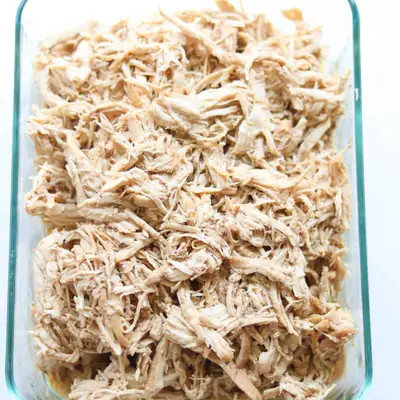

Instant Pot Shredded Chicken

Ingredients
- 3 pounds boneless, skinless chicken breasts or thighs
- 1 teaspoon garlic powder
- 1 teaspoon onion powder
- 1/2 teaspoon salt and pepper
- 2 cups low-sodium chicken broth
- 1 tablespoon low-sodium soy sauce
- 1/2-1 teaspoon smoked paprika
- juice of lemon
- 1 teaspoon oregano
Steps
- Season the chicken - Sprinkle both sides of the chicken with onion powder, garlic powder, salt, and pepper. I honestly don't measure - just eyeball and make sure each piece is well coated.
- Sear the chicken - Turn on the Instant Pot to “Sauté” mode. Add the oil, then sear the chicken for 1–2 minutes per side, just until lightly browned. Remove and set aside.
- Deglaze the pot - Pour in the broth and scrape up all the brown bits from the bottom of the pot—that’s where the flavor is!
- Pressure cook - Add the chicken back in. Close the lid, set the valve to sealing, and cook on High Pressure for 8 minutes. Let it naturally release for 10 minutes, then quick release the rest. Chicken should reach an internal temp of 165°F. If it’s not shredding easily, seal it back up and cook for 2–3 more minutes.
- Shred the chicken - Remove the chicken and shred with two forks - it should fall apart easily.
- Let it soak - Return the shredded chicken to the pot so it can soak up all the flavorful juices.
Recipe by Min Kwon · Kidfriendly Meals, from MJ and Hungryman. Saved here for personal use; the original has the full notes, tips and photos. Open original